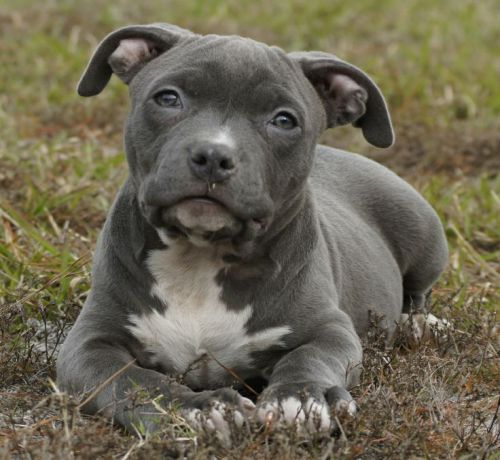

Les pitbulls sont une race de chien de catégorie 1. Beaucoup de personnes croient que les pitbulls sont des chiens dangereux car ils sont souvent utilisés pour des combats de chien
http://www.demaindemaitre.ca/comment-dresser-eduquer-pitbull-pit-bull/ Il y a plusieurs type de pitbull: il y a les blue nose qui est beaucoup moins sociale que les autres, et le red nose qui est un peu plus affectueux. En France, le Pit Bull n'est pas reconnu en tant que race mais comme un type de chien.